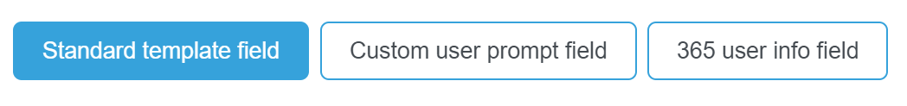
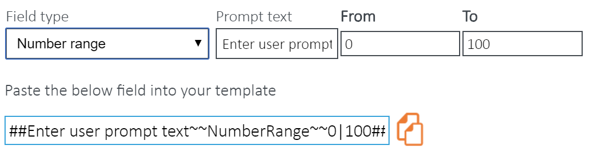
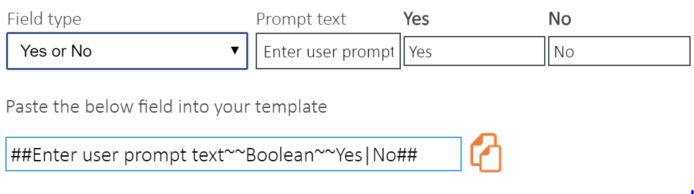
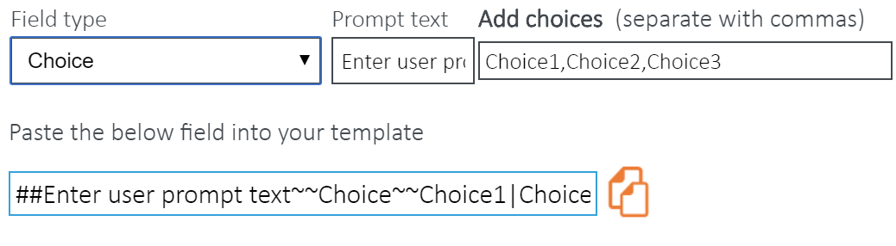

|
<< Click to Display Table of Contents >> Navigation: Templates > Field Builder Options |
There are 3 types of template fields: Standard, Custom and O365 User Info

Standard template fields are used to merge Practice Management client or job data with your template. When the final document is being produced, Templates will extract the appropriate data from your data source for a selected client.
The fields can also be Basic or Complex
Basic is when you only use a tag available in the ‘Field’ dropdown.
Complex includes the use of alternative and default field tags, separated by pipe-characters, to extract different information if data is missing for the main tag. Please note, when using alternative options two pipe characters (|) are required in the form:
Field | Alternative Field | Default Text
For example, if your document contained: Dear «Client Full Name|Client First Name|Loyal Customer»
•The chosen Field data will be used to populate the document - (Dear James Smith)
•If Templates cannot detect any data in the chosen field, it will then populate the document with data found in the chosen Alternative Field - (Dear James)
•If Template cannot detect any data in either the field or alternative field, the text you have entered in the Default Text area will be used to populate the document - (Dear Loyal Customer)
Please note, the special characters are used to separate the fields.
Custom Prompt template fields are used to prompt the user for information before the document is fully populated.
•Text & Multi-Line Text - the user must input plain text.
•Number - the user must input a number/s.
•Number Range - the user must enter a number within the set range.

•Date - the user must select a date from the calendar.
•Yes or No - the user must select either a Yes or No answer. However, you are able to customise the Yes or No text.
•Choice - the user must choose from a list of options.

O365 user info fields are used to merge the logged in user's account information with templates. The feature was designed to allow you to personalise templates by signing them off as the individual creating the document, rather than on behalf of someone else or having to use custom data or edit once created.
These fields include:
•First name
•Last name
•Full name
•Work phone
•Home phone
•Mobile
•Job title
You will have to upgrade the security level permissions on Templates to be able to include these fields. If you do not see this feature, follow a simple procedure detailed on our support site here.
Standard Examples |
Custom Prompt Examples |
|---|---|
Basic «ClientName» «JobName» |
##Please enter Tax Year?~~Text##
##How old are you?~~NumberRange~~18|80## |
Complex «ClientPostalAddress|Client Address|No Data Available» |
##Are you registered with the ATO?~~Boolean~~Yes|No##
##Where did you hear about us?~~Choice~~Bing|Google|Other## |